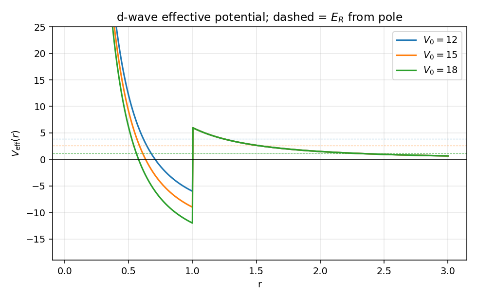
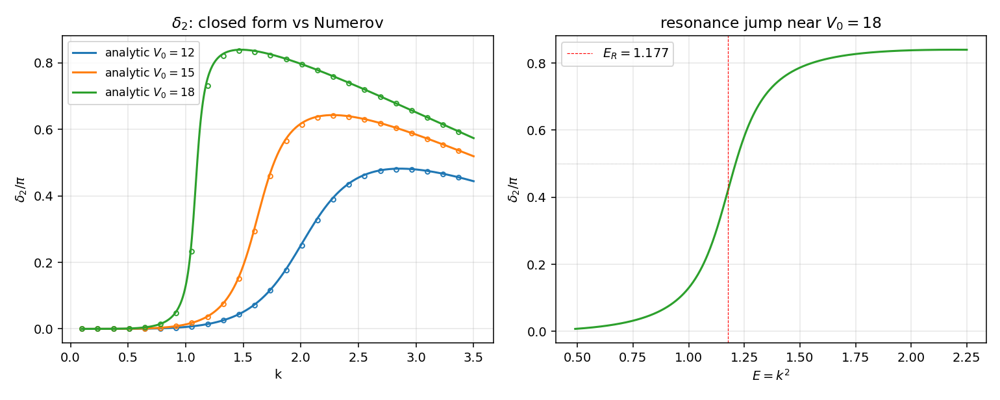
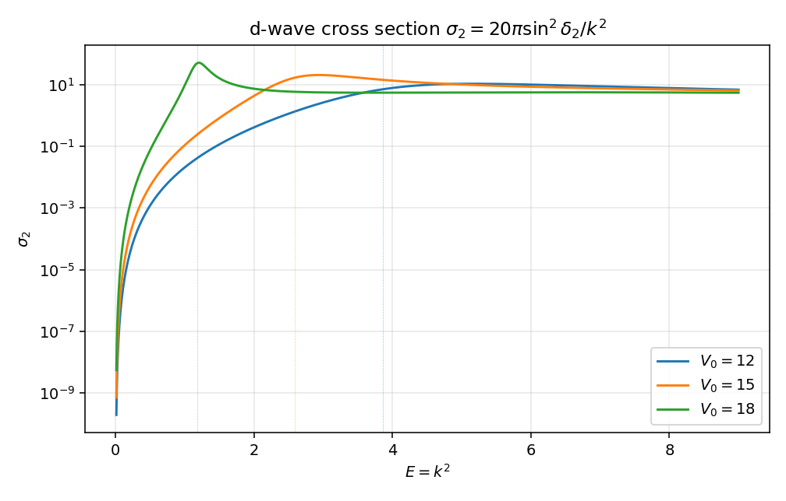
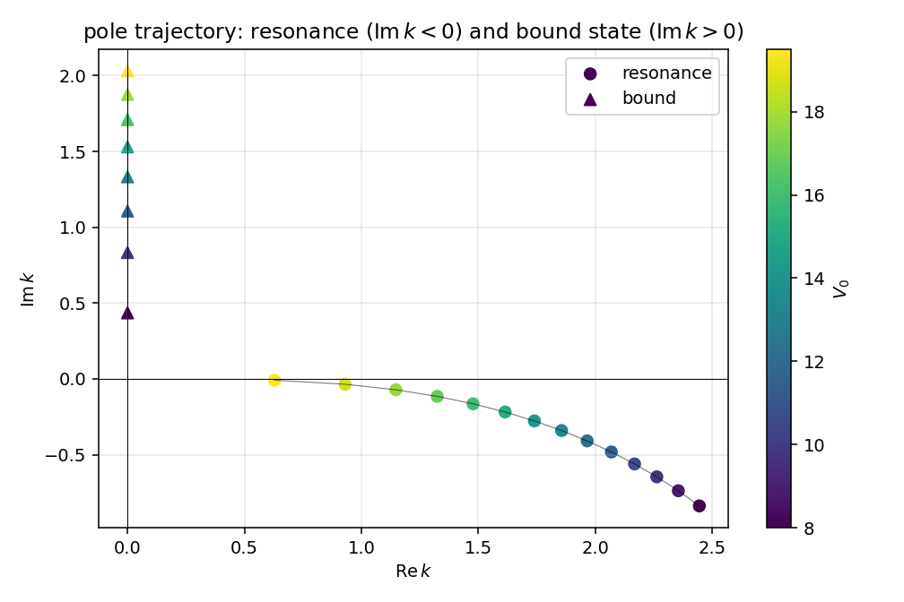

离心位垒与高分波 shape 共振#
第 2 篇方阱讲到 s 波时只有束缚态阈值的散射长度奇异，没有共振——s 波的"势"\(V_{\rm eff}(r)=-V_0\theta(R-r)\) 在 \(r>R\) 是平的，准束缚态可以无障碍地泄漏到无穷远。第 3 篇 delta 壳的 s 波共振要靠人工放一层强排斥壳来制造障壁。这一篇的目标是把"障壁从哪儿来"这件事内部化：仍然只用一个吸引方阱，但分波取 \(l = 2\)。离心势 \(l(l+1)/r^2\) 自动在阱外建一道软障壁，准束缚态泄漏被障壁压住，宽度 \(\Gamma\) 被压缩到很小——这就是 shape resonance 的最干净可解版本。
整篇取 \(\hbar = 1\)，\(2\mu = 1\)，\(E = k^2\)，\(R = 1\)。
势与有效势#
势仍是吸引方阱
但这次写径向方程时把离心项一起放进去：
对 \(l = 2\)，\(l(l+1) = 6\)，于是
外侧是 \(1/r^2\) 长尾排斥；内侧虽然势深 \(-V_0 + 6/R^2\) 仍可能为负但已经被离心项抬高。\(r = R\) 处 \(V_{\rm eff}\) 跳变 \(V_0\)。如果 \(V_0\) 比 \(6/R^2 = 6\) 大不了多少，内部井浅，全部能级浮在阈值附近；如果 \(V_0\) 大很多，井深，能级下降并最终穿过 \(E = 0\) 形成束缚态。中间区域内部存在能量 \(E_R > 0\) 的准束缚态，但要逃出去必须穿过外侧 \(6/r^2\) 障壁——这是 shape 共振的本质。
把内外两段画出来直接看到障壁结构。

虚线是稍后从极点求出的共振能 \(E_R\)。可以读出：\(V_0 = 12\) 的共振能量约 \(3.86\) 已经接近障壁顶；\(V_0 = 18\) 时共振降到 \(1.18\)，深埋在障壁里面。后者寿命应该长得多。
解析相移#
内侧 \(r < R\) 用波数 \(K = \sqrt{k^2 + V_0}\)，正则解（在原点处 \(u \sim r^{l+1}\)）写成 Riccati-Bessel 函数
外侧 \(r > R\) 同样取 Riccati-Bessel，但允许引入相移：
这是分波散射的标准约定：\(\hat j_l\) 在原点正则、\(\hat n_l\) 在原点不正则但在大 \(r\) 与 \(\hat j_l\) 相位差 \(\pi/2\)。把外侧的 \(\hat j_l, \hat n_l\) 替换回 s 波 (\(l = 0\)) 就是 \(\sin, -\cos\)，与第 2 篇的 \(\sin(kr+\delta_0)\) 写法一一对应（02_square_well_3d.zh.md:30）。
匹配条件还是要求 \(u\) 与 \(u'\) 都连续，等价地对数导数 \(u'/u\) 连续。定义内侧在 \(r = R\) 处的对数导数
外侧的对数导数从相移形式直接展开
令两侧相等并解出 \(\tan\delta_2\)：
这就是 d 波的中心结果。Bessel 函数导数用递推关系 \(\hat j_l'(x) = \hat j_{l-1}(x) - l\,\hat j_l(x)/x\) 算（这里其实是用 \(j_l'(x) = j_{l-1}(x) - (l+1)j_l(x)/x\) 推到 \(\hat j_l = x j_l\) 上）：对 \(l = 2\) 得
把这些代回 \(\tan\delta_2\) 就是 100% 闭式，不需要 Bessel 函数库。代码 08_centrifugal_barrier.py:18-46 实现了 \(\hat j_2, \hat n_2\) 及其导数，并组装出闭式相移。
退化检查：\(l = 0\) 时 \(\hat j_0 = \sin, \hat n_0 = -\cos\)，\(\hat j_0' = \cos, \hat n_0' = \sin\)，公式化简为
与 02_square_well_3d.zh.md:43 的方阱 s 波结果完全一致。这条退化是 \(l=2\) 公式的一致性证据。
数值验证：Numerov#
为了对账闭式公式，再独立用 Numerov 积分径向方程解一遍。从原点附近 \(u \sim (kr)^{l+1} = (kr)^3\) 起步（满足 \(u(0) = 0\) 且小 \(r\) 渐进），取网格 \(N = 12000\)、\(r_{\max} = 30\)，五点 Numerov 推到大 \(r\)。在 \(r\) 充分大处把数值解 \(u(r)\) 与外侧形式 \(C[\cos\delta_2\,\hat j_2(kr) - \sin\delta_2\,\hat n_2(kr)]\) 在两点 \(r_1, r_2\) 同时匹配，得到
代码 08_centrifugal_barrier.py:60-70。这不依赖任何 closed form，只用 Numerov 输出和 Riccati-Bessel 函数评估。把它和闭式 \(\delta_2(k)\) 画在一起。

左图三条 \(V_0\) 的曲线 (line) 和 Numerov 圆点 (circles) 完全重合。\(V_0 = 18\) 那条在 \(k \approx 1.08\) 附近出现典型的 Breit-Wigner S 形：\(\delta_2\) 在窄的 \(k\) 区间内快速从 \(0\) 升到接近 \(\pi\)（图上是除以 \(\pi\) 后从 \(0\) 升到 \(\sim 0.85\)，未完全到 \(1\) 是因为还有非零的本底相移）。\(V_0 = 15\) 也有共振但更宽，\(V_0 = 12\) 几乎看不出明显的快速跳跃，相移整条更平缓。右图把 \(V_0 = 18\) 那条用 \(E = k^2\) 横坐标重画并放大，红虚线是从复 \(k\) 平面 Newton 方法独立求出的极点 \(E_R = 1.177\)：相移最陡处与极点位置的吻合是 sanity check (b)。
截面与共振峰#
弹性总截面分波分解 partial_wave_projection.zh.md:360-378
只看 \(l = 2\) 通道：

\(V_0 = 18\) 时 \(\sigma_2\) 在 \(E_R \approx 1.18\) 处出现尖锐峰，峰高接近幺正极限 \(20\pi/k_R^2 \approx 53\)。\(V_0 = 15\) 峰位降到 \(E \approx 2.6\) 但宽得多——因为障壁顶 \(6/R^2 = 6\) 已经低于共振能 \(E_R = 2.6\)，准束缚态泄漏快。\(V_0 = 12\) 时根本看不到独立的峰，\(\delta_2\) 没经过 \(\pi/2\)，\(\sin^2\delta_2\) 没机会归一。这正是 shape 共振对参数的敏感行为：势井深一旦让能级远高于障壁顶，"共振"就退化成宽阔的本底，看不出 Breit-Wigner 形状。
宽度也可以反过来从 \(\delta_2(E)\) 的斜率读出。窄共振时
在 \(E = E_R\) 处 \(d\delta_2/dE\) 取最大值 \(2/\Gamma\)。\(V_0 = 18\) 数值给 \(E_R^{\rm BW} = 1.177\)、\(\Gamma^{\rm BW} = 0.264\)，与 Newton 极点 \(E_R^{\rm pole} = 1.177\)、\(\Gamma^{\rm pole} = 0.260\) 在百分位上一致。这就是 sanity check (b)。
复 k 平面极点轨迹#
把 \(S\) 矩阵 \(S_2(k) = e^{2i\delta_2(k)}\) 解析延拓到复 \(k\) 平面。定义分子分母两个函数
\(\tan\delta_2 = N/D\)，故 \(S_2 = (1+iN/D)/(1-iN/D) = (D + iN)/(D - iN)\)。\(S_2\) 极点对应 \(D - iN = 0\)，等价地 \(N + iD = 0\)。代码 08_centrifugal_barrier.py:51 用 Newton 法直接对这个组合函数做复根迭代。物理共振对应第二张 Riemann 面的下半 \(k\) 平面极点 \(\mathrm{Im}\, k < 0\)，对应能量 \(E = k^2 = E_R - i\Gamma/2\)（\(\Gamma = -4\,\mathrm{Re}\,k\cdot\mathrm{Im}\,k > 0\)）。这与 friedrichsModel.zh.md:551 "共振极点为第二张面下半平面解 \(z_* = E_R - i\Gamma_R/2\)" 是同一个对象的两个写法。
扫描 \(V_0 \in [8, 26]\) 跟踪极点：

弱井（\(V_0 \sim 8\)）极点远在复平面下方 \(k \approx 2.4 - 0.8i\)，对应宽共振（\(\Gamma \sim 8\)）。\(V_0\) 增大到 \(\sim 19.5\)，极点沿弧向 \(k\) 实轴爬升，\(\Gamma\) 缩到 \(0.02\)；继续增大 \(V_0\) 越过临界值 \(V_{0,\rm crit} \approx 20\)，极点跳到正虚轴（图中三角形），变成真束缚态 \(k = i\kappa\)、\(E = -\kappa^2 < 0\)。临界 \(V_0\) 处虚部为零、能量穿过零阈值——这是 d 波束缚态从阈值"出生"的瞬间，与 s 波情形 02_square_well_3d.zh.md:97 的束缚态计数公式完全平行，只是阈值条件被离心位垒推迟了。
观察轨迹：\(V_0\) 越靠近临界值 \(V_{0,\rm crit}\)，共振极点越靠近实轴，对应 \(\Gamma \to 0\)；穿过临界值后立刻成为束缚态，这就是文献里"共振到束缚态的连续转换"。Friedrichs 笔记里"耦合调到极强时第二张面的极点爬到实轴"那张图（friedrichsModel.zh.md:531-555）在这里被一个具体可解的中心势完美实现。
sanity checks#
08_centrifugal_barrier.py 在 sanity_checks() 中跑三件事：
- 在 \(k = 1.0\) 处比较解析 \(\tan\delta_2\) 与 Numerov 输出，对 \(V_0 \in \{4, 8, 12\}\) 全部相对误差 \(< 5\times 10^{-3}\)。
- \(V_0 = 18\) 的共振：Newton 极点给 \(E_R^{\rm pole} = 1.1769\)、\(\Gamma^{\rm pole} = 0.2595\)；Breit-Wigner 拟合（取 \(d\delta/dE\) 最大值的位置和值）给 \(E_R^{\rm BW} = 1.1768\)、\(\Gamma^{\rm BW} = 0.2638\)。\(E_R\) 在 \(10^{-4}\) 一致，\(\Gamma\) 在 \(1.5\%\) 一致。
- 深井 \(V_0 = 25\)：从 \(k_0 = 1.5i\) 起步的 Newton 收敛到 \(k = 0 + 1.831i\)，对应束缚能 \(E_b = -3.35\)，纯虚轴上的束缚态——与图四的束缚态分支吻合。
整脚本含画图 4 张图约 5 秒跑完，所有 png 写到 assets/08_centrifugal_barrier/。
与主线笔记的对账#
| 主线笔记 | 本篇中的对应 |
|---|---|
partial_wave_projection.zh.md:340，分波 LS 方程 \(T_l = V_l + V_l G_0 T_l\) |
中心势 \(l = 2\) 通道完全独立，闭式 \(\delta_2(k)\) 直接绕过积分方程；on-shell \(T_2\) 由 \(T_2(k,k;E) = -e^{i\delta_2}\sin\delta_2/(\pi\mu k)\) 反代。 |
partial_wave_projection.zh.md:360，\(f(\theta) = \sum_l (2l+1) f_l(k) P_l(\cos\theta)\) |
\(\sigma_2 = 4\pi(2l+1)\sin^2\delta_2/k^2\) 与 \(l = 2\) 项对应，截面图直接验证。 |
partial_wave_projection.zh.md:378，\(S_l = e^{2i\delta_l}\)，$ |
S_l |
friedrichsModel.zh.md:551，共振极点 \(z_* = E_R - i\Gamma_R/2\) |
\(V_0 \in [8, 19.5]\) 区间所有极点 \(k_n = k_n^{\rm R} + ik_n^{\rm I}\)（\(k_n^{\rm I} < 0\)），\(E_n = k_n^2 = E_R - i\Gamma/2\)，\(\Gamma = -4 k_n^{\rm R} k_n^{\rm I}\)。 |
friedrichsModel.zh.md:486，$\Gamma(E) = 2\pi |
g(E) |
Green_operator.zh.md:478，束缚态 = 物理面实极点；共振 = 第二张面复极点 |
\(V_0 > V_{0,\rm crit}\) 时正虚轴的束缚态极点，\(V_0 < V_{0,\rm crit}\) 时下半平面的共振极点；图四把同一族极点跨越临界值的连续变形画出来。 |
02_square_well_3d.zh.md:43，\(\tan\delta_0\) 闭式 |
本篇的 \(\tan\delta_2\) 公式在 \(l = 0\) 退化时严格化简到方阱 s 波结果，是 Bessel 函数推广的一致性。 |
与第 3 篇 delta 壳的对照#
第 3 篇用一层人工排斥 delta 壳制造障壁，\(\gamma\) 越大障壁越硬、共振越窄。本篇用自然的离心势 \(l(l+1)/r^2\) 取代人工壳：
| delta 壳 (\(l = 0\), 排斥壳 \(\gamma\)) | 本篇 (\(l = 2\), 离心势 \(6/r^2\)) |
|---|---|
| 内部硬球能级 \(E_n = (n\pi/R)^2\)（\(\gamma\to\infty\) 极限） | 内部井 \(E_n^{\rm in}\) 由 \(\hat j_2(KR) = 0\) 给出（\(V_0\to\infty\) 极限） |
| 有限 \(\gamma\) 泄漏：\(\Gamma_n \sim 2\pi/\gamma\) | 有限 \(V_0\) 障壁穿透：\(\Gamma\) 由 \(E_R\) 与障壁顶 \(6/R^2\) 的相对位置决定 |
| 障壁强度可调（\(\gamma\)） | 障壁强度由分波数固定（\(l(l+1)\)） |
| s 波，\(\sigma_0 = 4\pi\sin^2\delta_0/k^2\) | d 波，\(\sigma_2 = 20\pi\sin^2\delta_2/k^2\) |
两套模型在 Friedrichs 极点结构层面同构：复 \(k\) 平面下半的极点随耦合参数（\(\gamma\) 或 \(V_0\)）连续移动，靠近实轴时共振变窄，越过实轴时变成束缚态。差别在物理来源——壳是人工放的，离心是几何的——但代数结构是同一套。
next-step#
- 高分波系列：\(l = 1\)（p 波）共振介于 s 波（无障壁）与 d 波之间，障壁高 \(2/r^2\) 较低；可以补一张 \(l = 1, 2, 3\) 障壁高度对比图，看共振宽度对 \(l\) 的指数压低 \(\Gamma \sim \exp(-2\int\sqrt{V_{\rm eff} - E}\,dr)\)。
- \(T\) 矩阵 separable 化：\(V(r) = -V_0\theta(R-r)\) 在分波基里不是 rank-1，但若把它替换成 Yamaguchi 形式因子 \(g(p) = 1/(p^2 + \beta^2)\)，\(T_2\) 成为闭式分离算子，Friedrichs 模型的对应更直接，留给第 5 篇 separable rank-1。
- Gamow 态的归一化：复极点对应不可归一化的"右本征态"（指数发散波函数），通过 RHS 框架定义内积。本篇极点位置 \(k = k_R + ik_I\) 已经给出，下一篇可以画对应的 Gamow 波函数 \(\hat j_2(k_n r)\) 及其外推区域，把 RHS 的实物图像给具体化。
Created: 2026-05-08